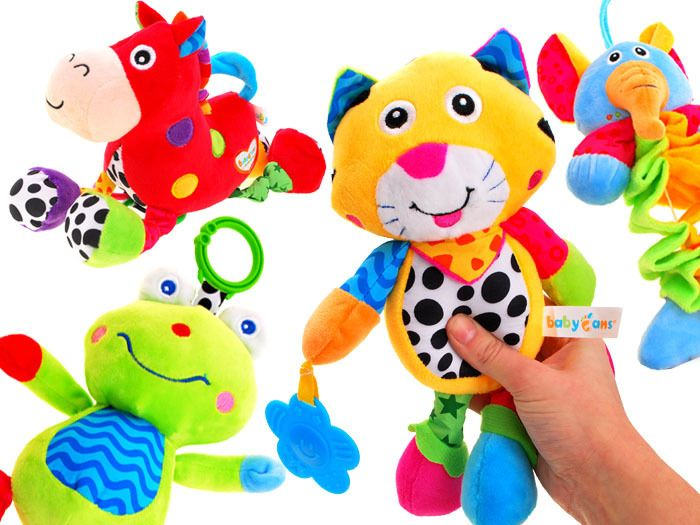

Pliušiniai žaislai
Pliušiniai žaislai

Apie mus Informacija pirkėjui Prekių pristatymas Apmokėjimas už prekes Garantijos ir gražinimas Bendros taisyklės Specialūs pasiūlymai Prekės su nuolaida Dovanų kuponai Kontaktai I-V 9:00-17:00 +370 600 58222 +370 656 88398 zaislu@pirklys.lt 0 prekių už 0.00€ Jūsų krepšelis yra tuščias! Nemokamam pristatymui Jums liko užsakyti prekių už 70.00€ Imitavimo žaislai Meistro žaislai Sodininko įrankiai, karučiai Grožio žaislai Gydytojo, ugniagesio ir policininko rinkiniai Valymo ir tvarkymo reikmenys Žaislinės transporto priemonės Autobusai Mašinėlės, simuliatoriai Gaisrinės mašinos Policijos mašinos, sraigtasparniai Greitosios pagalbos mašinos, sraigtasparniai Šiukšliavežės Traktoriai, sunkvežimiai Kranai, mašinos su kranu Vilkikai Nuotolinio valdymo mašinos Lėktuvai, laivai, traukiniai Trasos ir garažai Lėlės ir jų priedai L.O.L Lėlės Vežimėliai Lėlių namai Lėlių priežiūros rinkiniai Lėlių drabužėliai Piešimo - magnetinės lentos, stalai Virtuvėlės, parduotuvės, priedai Virtuvėlės Parduotuvės Buitinė technika Priedai Maistas Lavinamieji žaislai Dėlionės Edukaciniai Kaladėlės Konstruktoriai Minkštos kaladėlės, kilimėliai Muzikiniai žaislai Stalo žaidimai Antistresiniai žaislai Mediniai žaislai PolarB Dėlionės Edukaciniai Imitaciniai Kaladėlės, konstruktoriai Labirintai Lauko žaidimai, baldai Mašinėlės, lėktuvai, traukinukai Muzikos instrumentai Pakabinami sieniniai žaidimai Traukiami, stumiami žaislai Vaikštukai, paspiriamos mašinėlės Veriami Virtuvėlės ir jų priedai Žaidimai Kūdikių žaislai Saldžiam miegui Stumdukai - vaikštukai Barškučiai Lavinamieji žaislai Vonios žaislai Supamieji žaislai Traukiami ir stumiami žaislai Pliušiniai žaislai Triratukai, paspirtukai, keturračiai Ekskavatoriai Elektromobiliai Balansiniai dviratukai, motociklai Minami traktoriai Minami kartingai, mašinėlės Paspiriamos mašinėlės Paspirtukai Triratukai Minamų traktorių priedai Paspiriamų mašinėlių priedai Aksesuarai Kelio ženklai Žaidimų nameliai, aikštelės, sūpynės Žaidimų nameliai Žaidimų aikštelės Čiuožyklos Lauko baldai, iškylų stalai, kėdės Sūpynės Aktyvus laisvalaikis Priedai Čiuožyklos Interaktyvūs žaislai Išmanieji žaislai Smėlio dėžės Smėlio ir vandens stalai, smėlio dėžės Figūrėlės Futbolo, biliardo stalai Žaislai darželiams, vaikų kambariams Lavinamosios priemonės Žaislai, didelės kaladėlės Baldai Magnetinės lentos, priedai, sieniniai žaidimai Lauko žaidimai, žaislai Išparduodamos prekės Animaciniai herojai Ledo šalis - Frozen Maša ir lokys Disney Princess Enchantimals Žaibas Makvynas Peppa Pig Minnie Mouse Paw Patrol 44 Cats Bob Builder Gaisrininkas Sam Hello Kitty Lion King Mikė Pūkuotukas Žaislų istorija - Toy Story Wissper Prekiniai ženklai Baby Annabell Baby Born Baby Nurse BLACK AND DECKER Bobby Car Bosch Braun CLAAS Cozy Coupe Electrolux Evi Love Ferrari Ford JCB John Deere Kawasaki Mammoet MAN Mercedes Benz Miele New Holland Porsche Steffi Love Tefal Vileda Volvo Vroom Planet VW TURIME SANDĖLYJE Prekės pagal gamintojus Filtravimas Valyti Pristatymas: 1-2 darbo dienos Gamintojas: Chicco Classic World John Little Tikes Smoby Simba Ecoiffier Amžius nuo: 0 mėn. 6 mėn. 1 m. 1,5 m. 2 m. 3 m. 5 m. Kaina: Nuo 16 iki 69 € Pradžia > Pliušiniai žaislai
Pliušiniai žaislai
Rodyti: Lentelę Sąrašą Rodyti: 20 40 60 80 100 Rikiuoti: Standartiškai Pavadinimas A - Ž Pavadinimas Ž - A Kaina nuo mažiausios Kaina nuo didžiausios Modelis A - Ž Modelis Ž - A 2-jų aukštų katino namas su pliušiniu katinu ir priedais | Smoby 340400 2-jų aukštų katino namas su pliušiniu katinu ir priedais 2-jų aukštų katino namas su pliušiniu katinu ir priedais yra puikus žaislas gyvūnų mylėtojams. Namas yra dviejų lygių, rinkinyje yra 6 aksesuarai ir interaktyvi katė. Kačiukas gali miaukti ir murkti. Žaidimų centre telpa viskas, kas būtina kačiuko patogumui: viršutinėje dalyje įrengt.. 68.99€ 73.81€ Interaktyvi pliušinė Magiška Lama | Chi Chi Love | Simba 5893022 Interaktyvi pliušinė Magiška Lama | Chi Chi Love Simba Chi Chi Love Magiška lama su nuotolinio valdymo pultu iškart sukels šypseną vaiko veide ir jis taps geriausiu draugu. Galima pasiimti kur tik vaikas norės, pvz.: į darželį, pasivaikščioti ar bendraujant su draugais. Lama eina, judina uodegą ir skleidžia gražius garsus. Valdomas nuot.. 25.41€ 29.04€ Interaktyvus mielas pliušinis triušis | Chi Chi Love Cute Rabbit | Simba 5893380 Interaktyvus mielas pliušinis triušis | Chi Chi Love Cute Rabbit Žavingas smėlio spalvos pliušinis triušiukas iškart sukels šypseną vaiko veide ir jis taps geriausiu draugu. Galima pasiimti kur tik vaikas norės, pvz.: į darželį, pasivaikščioti ar bendraujant su draugais. Triušis šokinėja, judina ausis ir nosį. Kai jo nosytė juda, triušis .. 20.57€ 22.99€ Interaktyvus pliušinis kačiukas | Chi Chi Love | Little Cat | Simba 5893379 Interaktyvus pliušinis kačiukas | Chi Chi Love | Little Cat Nuostabus Chi Chi Love žaislinis interaktyvus kačiukas patiks vaikams norintiems turėti gyvūną namuose. Fantastiška dovana. Kačiukas gali vaikščioti ir net bėgioti, jis taip pat vizgina uodegą ir skleidžia katėms būdingus garsus – miauksi. Ar vaikas myli kates? Ši maža būtybė.. 20.57€ 22.99€ Interaktyvus pliušinis katinėlis su konteineriu ir veterinarijos gydytojo rinkiniu | Smoby 340300 Interaktyvus pliušinis katinėlis su konteineriu ir veterinarijos gydytojo rinkiniu Smoby rinkinį sudaro konteineris katei ir veterinaro lagaminas viename, ir pliušinis kačiukas, skleidžiantis garsus. Vaikas galės atlikti veterinarijos gydytojo vaidmenį ir padėti kačiukui pasveikti. Komplektą sudaro visi reikalingi priedai, kad būtų galima pradėt.. 49.49€ 53.24€ Interaktyvus pliušinis Magiškas vienaragis | Chi Chi Love | Simba 5893021 Interaktyvus pliušinis Magiškas vienaragis | Chi Chi Love Simba Chi Chi Love Magiškas vienaragis su nuotolinio valdymo pultu iškart sukels šypseną vaiko veide ir jis taps geriausiu draugu. Galima pasiimti kur tik vaikas norės, pvz.: į darželį, pasivaikščioti ar bendraujant su draugais. Vienaragis eina, judina uodegą ir skleidžia gražius g.. 26.62€ 29.04€ Lėlytė Maša 13 cm ir Lokys 25 cm | Maša ir Lokys | Simba 9301072 Lėlytė Maša 13 cm ir Lokys 25 cm | Maša ir Lokys Du geriausi draugai Maša ir lokys, tai vaikų pamėgto animacinio filmuko herojai. Lėlytė Maša yra apsirengusi violetiniais drabužiais. Drabužiai yra nuimami. Lokys labai minkštas ir mielas. Komplekte yra lėlytė Maša ir jos draugas lokys. Meškino dydis: 25 cm. Lėlės dydis: 13 cm. .. 25.41€ 30.25€ Lėlytė Maša 23 cm ir lokys 43 cm | Maša ir Lokys | Simba 9301016 Lėlytė Maša ir lokys 23 cm ir 43 cm Du geriausi draugai Maša ir lokys, tai vaikų pamėgto animacinio filmuko herojai. Lėlytė Maša yra apsirengusi rožinės spalvos drabužiais, drabužiai yra nuimami. Lokys yra pliušinis – labai minkštas ir mielas. Meškiuko dydis: 43 cm. Lėlės dydis: 23 cm. Rekomenduojamas amžius: vaikams nuo 3 metų. .. 39.80€ 42.35€ Lėlytė Maša 25 cm su lokio kostiumu 2in1 | Maša ir lokys | Simba 9301064 Lėlytė Maša 25 cm su lokio kostiumu 2in1 | Maša ir lokys Simba lėlytė iš animacinio filmuko „Maša ir lokys“ suteiks vaikams smagaus žaidimo. Lėlė yra apsirengusi lokio rūbais. Rekomenduojamas amžius: vaikams nuo 3 metų. Lėlės matmenys: 25 cm. .. 19.40€ 21.78€ Mėlyna kirmėlytė su melodija ir lempute | Cotoons | Smoby 211333 Mėlyna kirmėlytė su melodija ir lempute | Cotoons Prancūzijos bendrovės Smoby Cotoons mėlyna kirmėlytė yra puikus minkštas žaislas su lempute ir muzikine dėžute. Žaislas padės kūdikiui užmigti. Personažas turi lėlės veiduką, minkštą ir mielą audinio kūną. Kirmėlytė groja ramią migdančią melodiją ir švyti tamsoje, suteiktama kūdikiui saugumo jaus.. 24.20€ 31.85€ Minkštas pliušinis šuniukas Chi Chi Love | Princess | Simba 5893126 Minkštas pliušinis šuniukas |Chi Chi Love | Princess | Simba Komplekte yra Chi Chi Love Princess pliušinis šuniukas su karūna ir rožinės spalvos rankinė, kurioje galima nešti šuniuką ar mėgstamus žaislus. Šuniukas turi princesės karūną ir yra apsirengęs rožiniu kailiu. Rankinė pagaminta iš tos pačios medžiagos, todėl kartu su šuniuku suk.. 33.28€ 35.09€ Minkštas pliušinis šuniukas su rankine | Chi Chi Love | Bow Fashion | Simba 5893439 Minkštas pliušinis šuniukas su rankine | Chi Chi Love | Bow Fashion Simba Chi chi Love Shimmer pliušinį šuniuką vaikas galės lengvai pasiimti su savimi į keliones, darželį ar kiemą. Komplekte yra: Chi Chi Love šuniukas apsirengęs suknele ir blizgančia rožine rankine, kurioje galima nešti šuniuką ar mėgstamus žaislus. Šuniuko aukštis: 20 c.. 37.51€ 41.14€ Pliušinis lokys 50 cm | Maša ir Lokys | Simba 9309894 Pliušinis lokys 50 cm | Maša ir lokys | Simba Pliušinis Lokys 50 cm dydžioiš animacinio filmuko „Maša ir Lokys“ yra labai minkštas ir saugus žaislas vaikams. Puikiai tinka apkabinti ir tinka vaikams nuo pirmųjų gyvenimo dienų. Lokio dydis 50 cm. Rekomenduojamas amžius: vaikams nuo gimimo. .. 30.99€ 33.88€ Pliušinis mėlynas elnias dėžutėje | Chicco 74942 Pliušinis mėlynas elniukas dėžutėje | Chicco Pliušinis mėlynas Chicco elniukas pagamintas iš aukštos kokybės medžiagos ir labai malonus liesti. Žaislo dėka vaikas galės lengviau užmigti, o atsibudęs žaisti su minkštu žaislu. Išmatavimai: 43 cm. Pakuotės išmatavimai: 25 cm. .. 23.99€ 27.36€ Pliušinis rožinis meškutis dėžutėje | Chicco 74941 Pliušinis rožinis meškiukas dėžutėje | Chicco Pliušinis rožinis Chicco meškiukas pagamintas iš aukštos kokybės medžiagos ir labai malonus liesti. Žaislo dėka vaikas galės lengviau užmigti, o atsibudęs žaisti su minkštu žaislu. Matmenys: 43 cm. Pakuotės matmenys: 25 cm. .. 23.99€ 27.36€ Pliušinis šuniukas krepšyje | Chi Chi Love Urban | Simba 5893244 Pliušinis šuniukas krepšyje | Chi Chi Love Urban Simba Chi Chi Love Urban mielas šuniukas džinsiniame krepšyje. Šuo dėvi gobtuvą. Į komplektą įeina papildomi, specialūs tekstiliniai lipdukai, kuriais vaikas pats papuoš krepšį. Pagamintas iš pliušo, malonus liesti. Vaikas gali žaisti ar miegoti su šunimi, visą naktį jaustis saugus. Į komplek.. 33.00€ 35.09€ Pliušinis šuniukas su rankine | Chi Chi Love Ice Fashion | Simba 5893127 Pliušinis šuniukas su rankine | Chi Chi Love Ice Fashion Simba Chi Chi Love Ice Fashion mielas šuniukas su rankine. Šuo dėvi sijoną su snaigėmis. Komplekte yra šuniukas ir rankinė – kurioje vaikas galės neštis šuniuką eidamas pas draugus ar į darželį. Mergaitės rankinėje taip pat gali laikyti mėgstamus daiktus. Vaikas gali žaisti ar miegoti .. 35.09€ 39.06€ Pliušinis šuniukas su veterinarijos gydytojo rinkiniu | Simba 5543060 Pliušinis šuniukas su veterinarijos gydytojo rinkiniu | Simba Vaikas galės atlikti veterinarijos gydytojo vaidmenį ir padėti šuniukui pasveikti. Pakuotėje yra reikalingos veterinarijos priemonės. Komplektas yra dovana visiems vaikams, kurie myli gyvūnus. Jo dėka vaikai galės būti veterinarijos gydytoju ir gydyti savo mylimus pliušinius žaislu.. 21.70€ 24.20€ Interaktyvus pliušinis paršelis | Chi Chi Love | Mini Pig | Simba 5893378 Interaktyvus pliušinis paršelis | Chi Chi Love | Mini Pig Nuostabus Chi Chi Love interaktyvus pliušinis paršelis patiks vaikams norintiems turėti gyvūną namuose. Fantastiška dovana. Paršelis gali vaikščioti, vizgina uodegą ir judina šnipą ir kriuksi. Ši maža būtybė tikrai sužavės vaiką. Rožinis paršelis didelėmis apvaliomis akimis akimi.. 20.57€ 22.99€ Interaktyvus pliušinis rožinis šuniukas | Chi Chi Love | Simba 5893237 Interaktyvus pliušinis rožinis šuniukas | Chi Chi Love Žavingas rožinės spalvos pliušinis šuniukas su nuotolinio valdymo pultu iškart sukels šypseną vaiko veide ir jis taps geriausiu draugu. Galima pasiimti kur tik vaikas norės, pvz.: į darželį, pasivaikščioti ar bendraujant su draugais. Šuniukas eina, vizgina uodegytę ir loja. Valdomas.. 25.41€ 27.83€ Interaktyvus pliušinis šuniukas haskis | Chi Chi Love Husky | Simba 5893243_A Interaktyvus pliušinis šuniukas haskis | Chi Chi Love Husky Žavingas pliušinis šuniukas haskis su nuotolinio valdymo pultu iškart sukels šypseną vaiko veide ir jis taps geriausiu draugu. Galima pasiimti kur tik vaikas norės, pvz.: į darželį, pasivaikščioti ar bendraujant su draugais. Šuniukas eina, vizgina uodegytę ir loja. Valdomas nuo.. 33.88€ 36.30€ Interaktyvus pliušinis šuniukas | Chi Chi Love Poshi | Simba 5893242 Interaktyvus pliušinis šuniukas | Chi Chi Love Poshi Nuostabus CHI CHI Love minkštas žaislinis interaktyvus šuniukas valdomas pavadėliu. Fantastiška dovana vaikams mylintiems ir norintiems turėti šuniuką. 4 funkcijos: loja, vizgina uodegą, judina galvą ir eina. Rekomenduojamas amžius: vaikams nuo 5 metų. Šuniuko matmenys: 25 x 21 x.. 33.44€ 35.21€ Interaktyvus pliušinis šuniukas | Chi Chi Love Puppy Friends | Simba 5893243_B Interaktyvus pliušinis šuniukas | Chi Chi Love Puppy Friends Žavingas smėlio spalvos pliušinis šuniukas su nuotolinio valdymo pultu iškart sukels šypseną vaiko veide ir jis taps geriausiu draugu. Galima pasiimti kur tik vaikas norės, pvz.: į darželį, pasivaikščioti ar bendraujant su draugais. Šuniukas eina, vizgina uodegytę ir loja. Val.. 25.41€ 27.83€ Komplektas - 2 pliušiniai šuniukai ir rankinė | Chi Chi Love Happy Family | Simba 5893213 Komplektas - 2 pliušiniai šuniukai ir rankinė | Chi Chi Love Happy Family | Simba 5893213 Mieli Simba pliušiniai šuniukai Chi Chi Love pasiruošęs į kelionę su vaiku, nes jie turi nuostabų krepšį. Rinkinį sudaro du šuniukai: vienas didelis, o kitas mažas ir rankinė. Šuniukai pagaminti iš smėlio spalvos pliušo, todėl jie minkšti ir švelnūs.. 35.49€ 37.51€ Minkštas mielas pliušinis šuniukas Chi Chi Love | On Tour | Simba 5893124 Minkštas mielas pliušinis šuniukas Chi Chi Love | On Tour Mielas Simba pliušinis šuniukas Chi Chi Love pasiruošęs į kelionę su vaiku, nes jis turi nuostabų krepšį. Pagamintas iš minkštos medžiagos ir turi nuostabias dideles akytes. Stilingas krepšys šuniukui. Šuniuko dydis apie 20 cm. Rekomenduojamas amžius: vaikams nuo 5 metų. .. 25.00€ 27.83€ Minkštas pliušinis šuniukas Chi Chi Love | CCL Swap Fashion | Simba 5893351 Minkštas pliušinis šuniukas Chi Chi Love | CCL Swap Fashion Mielas Simba pliušinis šuniukas Chi Chi Love pasiruošęs į kelionę su vaiku, nes jis turi nuostabią rankinę su blizgučiais. Krepšys rausvas. Iš vienos pusės padengtas mėlynos, iš kitos rožinės spalvos blizgučiais, sudarančiais žvaigždės modelį. Braukiant aukštyn ir žemyn rankomis, .. 35.49€ 37.51€ Minkštas pliušinis šuniukas su rankine | Chi Chi Love | Shimmer | Simba 5893432 Minkštas pliušinis šuniukas su rankine | Chi Chi Love | Shimmer Simba Chi chi Love Shimmer pliušinį šuniuką vaikas galės lengvai pasiimti su savimi į keliones, darželį ar kiemą. Komplekte yra: Chi Chi Love šuniukas apsirengęs suknele ir permatoma rankinė, kurioje galima nešti šuniuką ar mėgstamus žaislus. Šuniuko aukštis: 20 cm... 38.72€ 42.35€ Minkštas pliušinis šuniukas | Chi Chi Love | Glam Fashion | Simba 5893125 Minkštas pliušinis šuniukas | Chi Chi Love | Glam Fashion Komplekte yra: Chi Chi Love pliušinis šuniukas su žėrinčia apykakle, rožiniu bantu ir stilinga, blizganti rožinė rankinė, kurioje galima nešti šuniuką ar mėgstamus žaislus. Šuniuko aukštis: 20 cm. Rekomenduojamas amžius: vaikams nuo 5 metų. .. 36.30€ 38.93€ Minkštas pliušinis šuniukas | Chi Chi Love | PARIS II | Simba 5893123 Minkštas pliušinis šuniukas | Chi Chi Love | PARIS II | Simba Simba Chi chi Love Paris II pliušinį šuniuką vaikas galės lengvai pasiimti su savimi į keliones, darželį ar kiemą. Komplekte yra: Chi Chi Love šuniukas su apykakle, suknelė su tamsoje šviečiančiomis širdelėmis ir rankinė, kurioje galima nešti šuniuką ar mėgstamus žaislus. Šuniu.. 36.30€ 38.93€ Minkštas pliušinis šuniukas | Chi Chi Love | Rainbow | Simba 5893438 Minkštas pliušinis šuniukas | Chi Chi Love | Rainbow Simba Chi chi Love Rainbow pliušinį šuniuką vaikas galės lengvai pasiimti su savimi į keliones, darželį ar kiemą. Komplekte yra: Chi Chi Love šuniukas psirengęs suknele vaivorykštės spalvomis ir rankinė, kurioje galima nešti šuniuką ar mėgstamus žaislus. Šuniuko aukštis: 20 cm. Rek.. 36.30€ 38.93€ Minkštas pliušinis šuniukas | Chi Chi Love | Star | Simba 5893115 Minkštas pliušinis šuniukas | Chi Chi Love | Star Komplekte yra Chi Chi Love pliušinis šuniukas su rožinės spalvos suknele, rankinė su tamsoje šviečiančiais atšvaitais, kurioje galima nešti šuniuką ar mėgstamus žaislus. Šuniuko aukštis: 20 cm. Rekomenduojamas amžius: vaikams nuo 5 metų. .. 39.20€ 42.69€ Pliušinis meškiukas 3in1 | Classic World CW5084 Pliušinis meškiukas 3in1 | Classic World CW5084 Pliušinis meškiukas 3in1 yra mielas žaislas, kurį vaikas galės prisiglausti, su juo žaisti ar naudoti kaip migduką ar minkštą pagalvėlę. Spaudžiant meškiuką galvą skleidžia malonų garsą, o likusi meškiuko dalis yra minkšta kaip pagalvė. Rekomenduojmas amžius: vaikams nuo gimimo. Matmenys: .. 16.34€ 17.55€ Pliušinis meškiukas | Billy | Classic World CW5080 Pliušinis meškiukas | Billy Billy yra mielas meškiukas, kuris taps geriausiu kūdikio draugu. Meškiukas Billis yra mielas žaislas kūdikiams, kuris yra nepakeičiamas žaislas auginant ir rūpinantis mažiausiais vaikais. Malonus liesti, švelnus. Ekologiški žaislai yra skirti mažiausiems vaikams, kurie yra pagaminti iš visiškai natūralių, bio.. 19.97€ 21.78€ Pliušinis sėdintis Lokys 25 cm | Maša ir Lokys | Simba 9301942_SIE Pliušinis sėdintis Lokys 25 cm | Maša ir Lokys Pliušinis sėdintis Lokys 25 cm dydžioiš animacinio filmuko „Maša ir Lokys“ yra labai minkštas ir saugus žaislas vaikams. Puikiai tinka apkabinti ir tinka vaikams nuo pirmųjų gyvenimo dienų. Lokio dydis 25 cm. Rekomenduojamas amžius: vaikams nuo gimimo. .. 19.36€ 20.57€ Pliušinis stovintis Lokys 25 cm | Maša ir Lokys | Simba 9301942_STO Pliušinis stovintis Lokys 25 cm | Maša ir Lokys Pliušinis stovintis Lokys 25 cm dydžioiš animacinio filmuko „Maša ir Lokys“ yra labai minkštas ir saugus žaislas vaikams. Puikiai tinka apkabinti ir tinka vaikams nuo pirmųjų gyvenimo dienų. Lokio dydis 25 cm. Rekomenduojamas amžius: vaikams nuo gimimo. .. 19.36€ 20.57€ Pliušinis zuikutis 3in1 | Classic World CW5085 Pliušinis zuikutis 3in1 | Classic World CW5085 Pliušinis meškiukas 3in1 yra mielas žaislas, kurį vaikas galės prisiglausti, su juo žaisti ar naudoti kaip migduką ar minkštą pagalvėlę. Spaudžiant meškiuką galvą skleidžia malonų garsą, o likusi meškiuko dalis yra minkšta kaip pagalvė. Rekomenduojmas amžius: vaikams nuo gimimo. Matmenys: 3.. 16.34€ 17.55€ Šokinėjančių voverių namas medyje | Springlings Surprise Treehouse | Little Tikes 649806E7C Šokinėjančių voverių namas medyje | Springlings Surprise Treehouse „Springlings Surprise Treehouse“ namelis medyje su 2 pliušinėmis voverėmis džiugins vaikus nuo 2 metų. Voverę įdėjus į namelį ir atidarius stogą – iššoka! Į komplektą įeina: namelis-medis, 1 pliušinė voverė mama ir jos vaikas voveriukas. Svoris 0,5 kg. Rekomenduoja.. 30.49€ 32.67€ Veterinarijos gydytojo vežimėlis su priedais | Veterinary clinic | Ecoiffier 1908 Veterinarijos gydytojo vežimėlis su priedais | Veterinary clinic Kompaktiškas Ecoiffier veterinarijos gydytojo vežimėlis su pliušiniu šuniuku labai patiks vaikams. Komplekte yra: vežimėlis, pliušinis šuniukas, dėžė šuniuko transportavimui, gydytojo įrankiai. Rekomenduojamas amžius: vaikams nuo 1,5 metų. Matmenys: 40,5 x 28.. 42.35€ 44.77€ Dainuojantis lokys su Kalėdų senelio rūbais | Maša ir Lokys | Simba 9301011 Dainuojantis lokys su Kalėdų senelio rūbais | Maša ir Lokys Mielas Lokys yra ištikimas Mašos draugas. Lokys yra apsirengęs Kalėdų senelio rūbais, kepure ir barzda. Kai paspausite jam ranką – išgirsite originalią dainą „One, Two, Three! Light the Christmas Tree!“ (dainuoja lenkų kalba). Lokio rūbai nuimami, tada bus tiesiog mielas didelis.. 31.46€ 43.22€ Interaktyvus šuniukas | Chi Chi Love | Simba 5893264 Interaktyvus šuniukas | Chi Chi Love Nuostabus CHI CHI Love žaislinis interaktyvus šuniukas vaikams norintiems turėti šuniuką. Fantastiška dovana. Komplekte yra: šuniukas, forma maistui ruošti, indelis maistui laikyti, apykaklė su pavadėliu ir maišeliai skirti šuniuko paliktoms „dovanėlėms“ surinkti. Vaikas galės pasitikrinti ar jau pak.. 43.56€ Maša ir lokys su 4 gyvūnais | Simba 9301012 Maša ir lokys su 4 gyvūnais Simba lėlytės Mašos ir lokio su draugais rinkinys taps vaiko geriausiais draugais. Maša ir lokys mėgsta leisti laiką kartu. Šį kartą jie leidosi į nuotykius miške ir pasiėmė su savimi draugus – pingviną, voverę, šunį ir zuikutį. Kartu praleistas laikas jiems tikrai suteiks daug linksmybių ir puikių prisiminimų. .. 36.30€ Pliušinis šokinėjimo kamuolys - Besmegenis Olafas Ledo šalis | Frozen | John 59581 Pliušinis šokinėjimo kamuolys - Olafas Ledo šalis Puikus pliušinis šokinėjimo kamuolys besmegenis Olafas skirtas vaikams aktyviai leisti laiką. Reikia patiems pripūsti, parduodamas nepripūstas. Rekomenduojamas amžius: vaikams nuo 3 metų. Matmenys: skersmuo 45 cm. Pakuotės matmenys: 26 x 21 x 10 cm. .. 22.99€ Rodoma nuo 1 iki 42 iš 42 (1 puslapių) Žaislų pirklys © 2020Posted by Jack  Read more
Read more  Comments (15)
Comments (15)  2020.10.29 11:42
2020.10.29 11:42